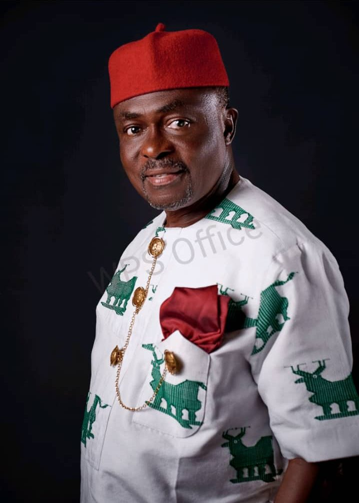

The story behind the man, and the Foundation he built.

Born in Akwete, Ukwa East LGA, Abia State, to Late Chief Chibor Nkwonta and Mrs Mercy Opunne Nkwonta.
Undergraduate studies in Maritime / Shipping & Transport Studies, Centre for Business Studies, London (now part of the University of Greenwich).
Career across the Nigerian Ports Authority, True Venture Nigeria, Flour Mills of Nigeria, Exxon Mobil, Fymak Nigeria, and Shell Petroleum Development Company.
Founded BlueSeas Maritime Services.
Established the Sir Chris Nkwonta Foundation.
MBA, Leadership & Sustainability, University of Cumbria, United Kingdom.
Elected Member, Federal House of Representatives, Ukwa East/Ukwa West; later Chairman, House Committee on Climate Change and on the South East Development Commission.
Chris Nkwonta's story starts modestly: raised in Akwete, he often missed school to farm and fish so he could afford to keep studying. That early struggle shaped a lifelong conviction — that people held back only by a lack of means deserve a real chance to reach their potential.
He went on to build a career spanning maritime services, shipping, logistics, and oil and gas, eventually founding his own maritime company. Alongside three decades in business, he took on public roles in Abia State, including chairing the state's SURE-P programme, before being elected to represent Ukwa East and Ukwa West in Nigeria's House of Representatives.
In April 2010, he formalised his personal philanthropy into the Sir Chris Nkwonta Foundation — a non-profit, self-funded organisation that channels his giving into education, healthcare, skills training, and community development for the people of Ukwa land.
Secondary school scholars supported
University scholars funded
Youths trained in skills programmes
“Giving every child with promise the resources, guidance and dignity they need to build a brighter future.”